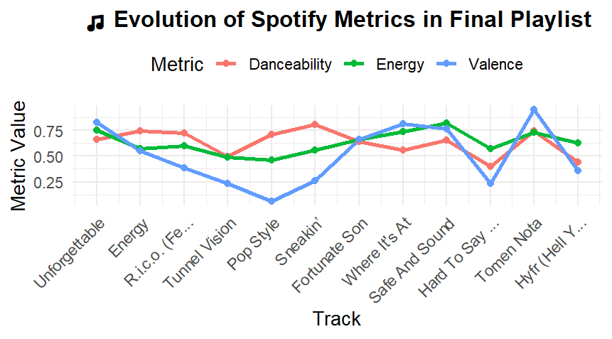
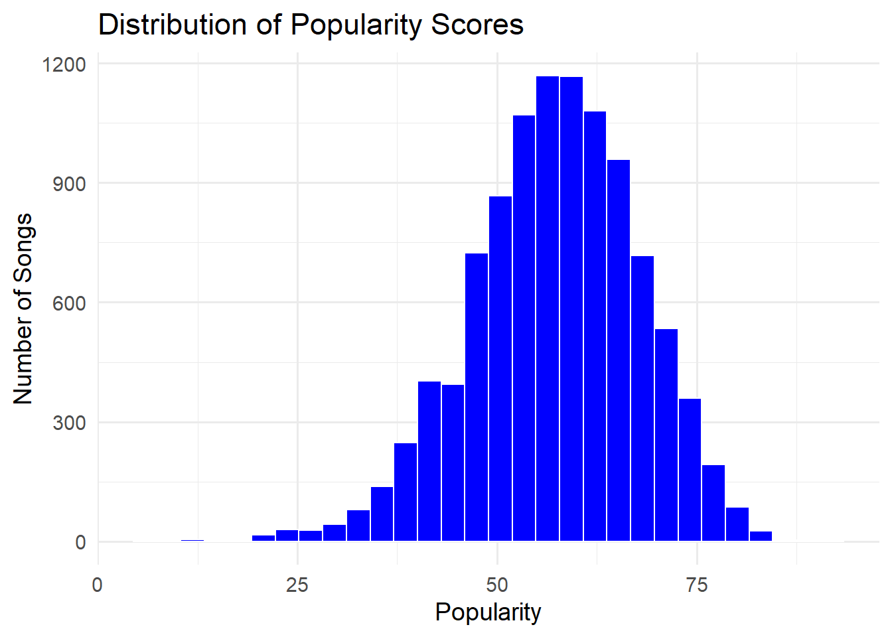
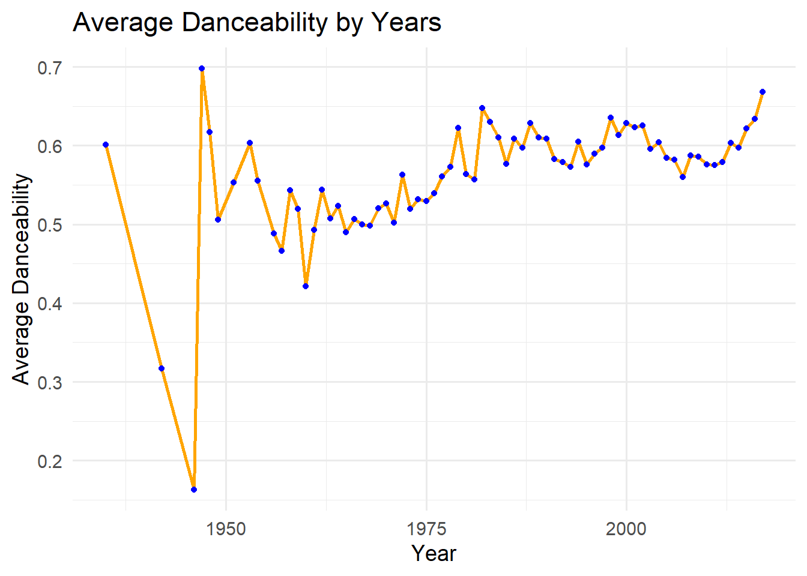
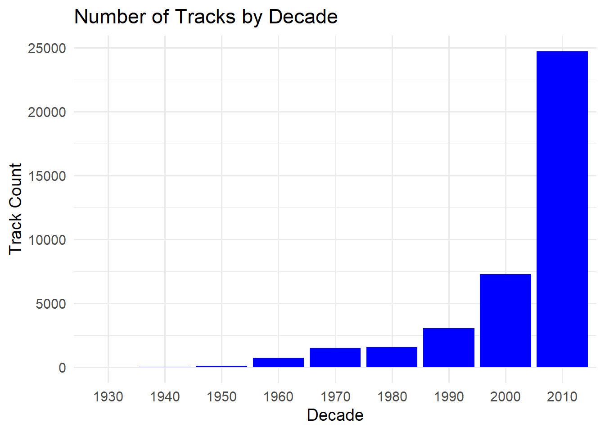
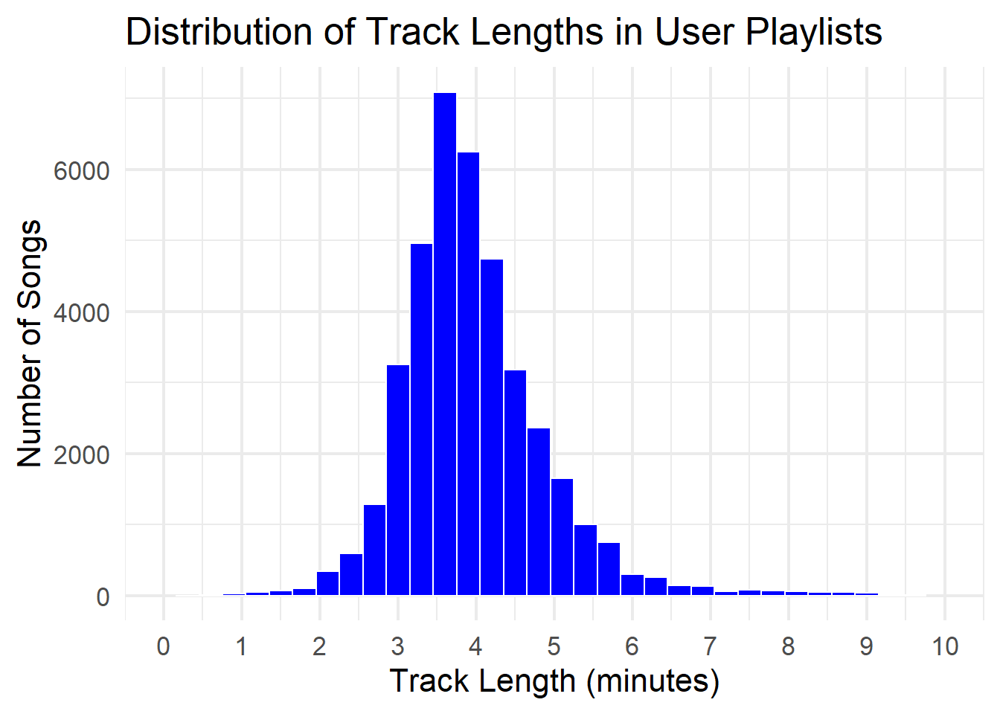
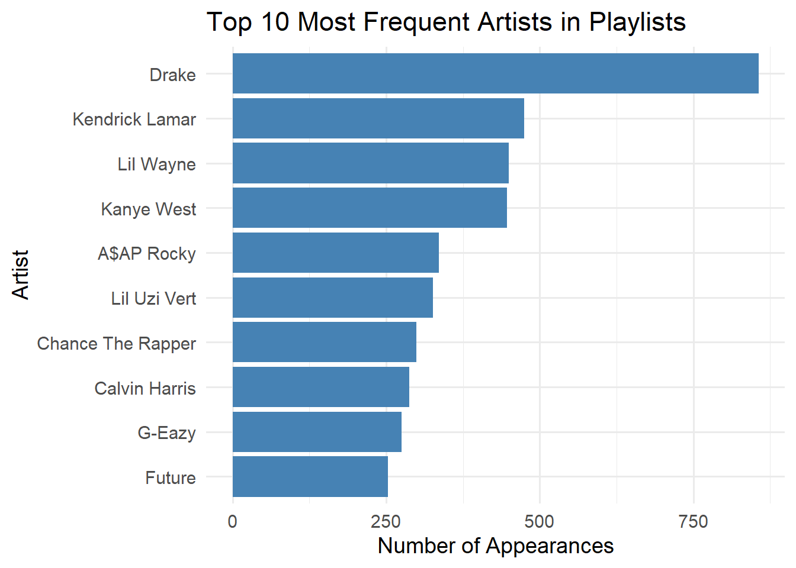
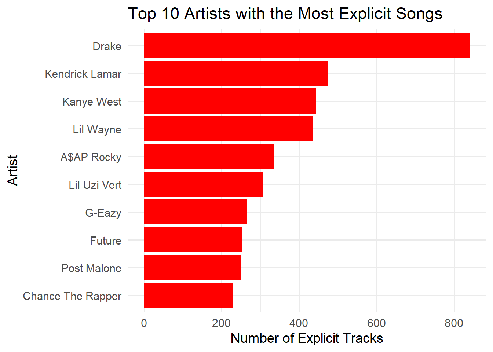
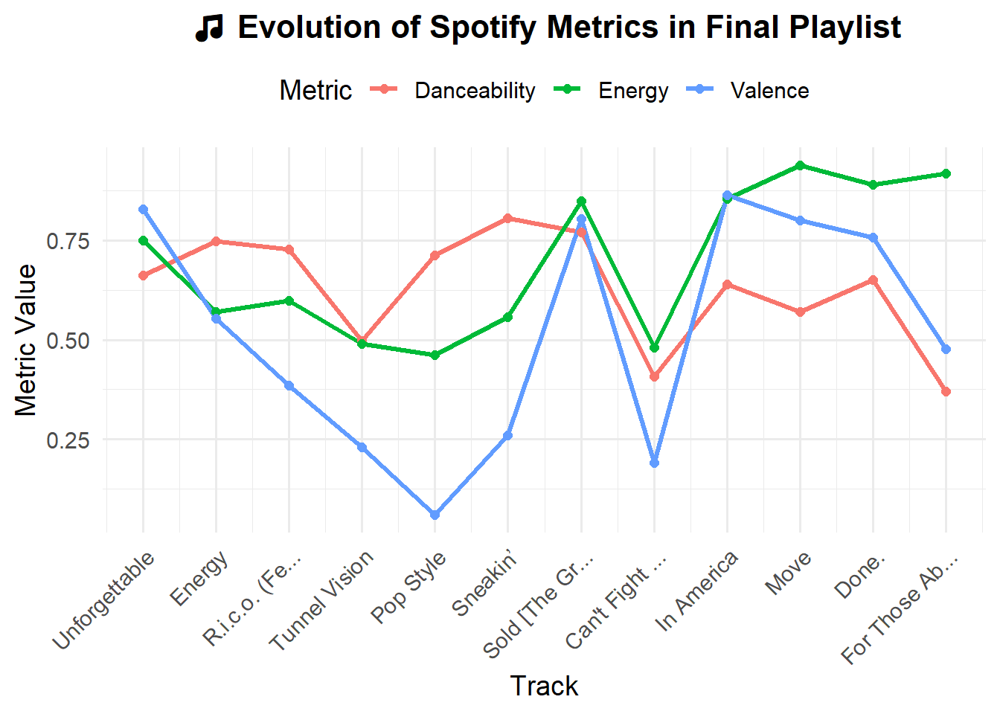

Code
knitr::include_graphics("Rplot02.png")
Vibes in Motion is a 12-track playlist designed to take you on a smooth and engaging music journey. It starts with warmth and groove, dips into calm and emotion and rises again with strong rhythm. You will find both popular artists like Drake and lesser-known talents like Adriel Favela. This playlist mixes familiar tracks with new discoveries, making it great for relaxing, driving or just enjoying good music.
Quantitative Harmony: Songs were selected based on similar tempo, key and compatible ranges in danceability, energy and valence ensuring seamless transitions.
Emotional Journey: The playlist rises and falls in mood. It begins high-energy, slows down in the middle and picks up again at the end. It makes the sequence feel natural and narrative-driven.
Balance of Familiarity & Discovery: At least 2 unfamiliar songs and 3 non-popular tracks (popularity < 70) are purposefully included, celebrating music discovery while keeping you grounded in rhythmic familiarity.
Statistical Backbone: All songs were selected from a filtered pool using five key heuristics including:
📈 Why This Playlist is Ultimate The chart below shows how the danceability, energy, and valence (emotional tone) change from one track to the next. You can see that the playlist flows smoothly, with a balance of highs and lows that keep it interesting.
knitr::include_graphics("Rplot02.png")
The analysis and visualization were done using R and the dplyr, ggplot2 and kableExtra packages.
Vibes in Motion is not just a playlist. It is a statistically driven musical narrative built with both heart and data. It mixes emotional flow, rhythm and new discoveries. With a clear structure and a good balance of sounds, it gives listeners a full musical experience and that is why it should be considered for the Internet’s Best Playlist.
# Load packages
library(tidyverse)
library(knitr)
library(kableExtra)
library(lubridate)
library(jsonlite)
library(purrr)#Loading the libraries
library(tidyverse)
#Data Aquisition
#Task 1:Song Characteristics Dataset
if (!file.exists("data/mp03/spotify_data.csv")) {
# Create directory if it doesn't exist
dir.create("data/mp03", showWarnings = FALSE, recursive = TRUE)
# Define download URL and destination file path
base_url <- "https://raw.githubusercontent.com/gabminamedez/spotify-data/refs/heads/master/data.csv"
destfile <- "data/mp03/spotify_data.csv"
# Log message
cat("Downloading Spotify dataset...\n")
# Download file using base R
download.file(base_url, destfile, method = "libcurl")
cat("Download complete: saved to", destfile, "\n")
}
# Read and clean data
load_songs <- function() {
if (!require("readr")) install.packages("readr", quiet = TRUE)
library(readr)
# Read data
songs <- read_csv("data/mp03/spotify_data.csv", show_col_types = FALSE)
# Clean column names
colnames(songs) <- tolower(gsub("\\.+", "_", colnames(songs)))
return(songs)
}
spotify_data <- load_songs()
glimpse(spotify_data)
head(spotify_data)
clean_artist_string <- function(x){
str_replace_all(x, "\\['", "") |>
str_replace_all("'\\]", "") |>
str_replace_all(" '", "")
}
SONGS <- spotify_data |>
separate_longer_delim(artists, ",") |>
mutate(artist = clean_artist_string(artists)) |>
select(-artists)
View(SONGS)The Song Characteristics Dataset contains detailed information of 226,813 individual Spotify tracks. Each row represents one song with a total of 19 columns. These columns include track details such as id, name, artist, release date and year, along with various audio features like danceability, energy, acousticness, instrumentalness, valence and tempo. The dataset also includes additional attributes such as a popularity score (popularity), whether the track is explicit (explicit), and technical measures like loudness, speechiness, mode and key. The table below shows a sample of the dataset.
head(SONGS)|>
kable(caption = "<b><span style='font-size:18px;'>Sample of Songs Data</span></b>") |>
kable_styling(
bootstrap_options = c("striped", "hover", "condensed"),
full_width = FALSE,
position = "center")| id | name | duration_ms | release_date | year | acousticness | danceability | energy | instrumentalness | liveness | loudness | speechiness | tempo | valence | mode | key | popularity | explicit | artist |
|---|---|---|---|---|---|---|---|---|---|---|---|---|---|---|---|---|---|---|
| 6KbQ3uYMLKb5jDxLF7wYDD | Singende Bataillone 1. Teil | 158648 | 1928 | 1928 | 0.995 | 0.708 | 0.1950 | 0.563 | 0.1510 | -12.428 | 0.0506 | 118.469 | 0.7790 | 1 | 10 | 0 | 0 | Carl Woitschach |
| 6KuQTIu1KoTTkLXKrwlLPV | Fantasiestücke, Op. 111: Più tosto lento | 282133 | 1928 | 1928 | 0.994 | 0.379 | 0.0135 | 0.901 | 0.0763 | -28.454 | 0.0462 | 83.972 | 0.0767 | 1 | 8 | 0 | 0 | Robert Schumann' |
| 6KuQTIu1KoTTkLXKrwlLPV | Fantasiestücke, Op. 111: Più tosto lento | 282133 | 1928 | 1928 | 0.994 | 0.379 | 0.0135 | 0.901 | 0.0763 | -28.454 | 0.0462 | 83.972 | 0.0767 | 1 | 8 | 0 | 0 | Vladimir Horowitz |
| 6L63VW0PibdM1HDSBoqnoM | Chapter 1.18 - Zamek kaniowski | 104300 | 1928 | 1928 | 0.604 | 0.749 | 0.2200 | 0.000 | 0.1190 | -19.924 | 0.9290 | 107.177 | 0.8800 | 0 | 5 | 0 | 0 | Seweryn Goszczyński |
| 6M94FkXd15sOAOQYRnWPN8 | Bebamos Juntos - Instrumental (Remasterizado) | 180760 | 9/25/28 | 1928 | 0.995 | 0.781 | 0.1300 | 0.887 | 0.1110 | -14.734 | 0.0926 | 108.003 | 0.7200 | 0 | 1 | 0 | 0 | Francisco Canaro |
| 6N6tiFZ9vLTSOIxkj8qKrd | Polonaise-Fantaisie in A-Flat Major, Op. 61 | 687733 | 1928 | 1928 | 0.990 | 0.210 | 0.2040 | 0.908 | 0.0980 | -16.829 | 0.0424 | 62.149 | 0.0693 | 1 | 11 | 1 | 0 | Frédéric Chopin' |
load_pl <- function() {
DATA_DIR <- "data/mp03/playlists"
BASE_URL <- "https://raw.githubusercontent.com/DevinOgrady/spotify_million_playlist_dataset/master/data1/"
FILE_NAME <- "mpd.slice.0-999.json"
FILE_PATH <- file.path(DATA_DIR, FILE_NAME)
FILE_URL <- paste0(BASE_URL, FILE_NAME)
if (!dir.exists(DATA_DIR)) {
dir.create(DATA_DIR, recursive = TRUE)
}
if (!file.exists(FILE_PATH)) {
download.file(FILE_URL, destfile = FILE_PATH, method = "auto")
}
data <- fromJSON(FILE_PATH, simplifyVector = FALSE)
if (!"playlists" %in% names(data)) return(NULL)
pl_tracks <- map_dfr(data$playlists, function(pl) {
if (!is.list(pl)) return(NULL)
if (!("tracks" %in% names(pl))) return(NULL)
if (!is.list(pl$tracks) || length(pl$tracks) == 0) return(NULL)
track_df <- tryCatch(
bind_rows(pl$tracks),
error = function(e) NULL
)
if (is.null(track_df) || nrow(track_df) == 0) return(NULL)
track_df |>
mutate(
playlist_name = pl$name,
playlist_id = pl$pid,
playlist_followers = pl$num_followers,
playlist_position = row_number()
) |>
select(
playlist_name,
playlist_id,
playlist_followers,
playlist_position,
track_name,
track_uri,
artist_name,
artist_uri,
album_name,
album_uri,
duration_ms
) |>
rename(
track_id = track_uri,
artist_id = artist_uri,
album_id = album_uri,
duration = duration_ms
)
})
return(pl_tracks)
}
# Load playlists data
playlists_data <- load_pl()
glimpse(playlists_data)
head(playlists_data)
View(playlists_data)
# Cleaning up ID columns
strip_spotify_prefix <- function(x){
library(stringr)
str_extract(x, ".*:.*:(.*)", group=1)
}
playlists_data <- playlists_data |>
mutate(
track_id = sapply(track_id, strip_spotify_prefix),
artist_id = sapply(artist_id, strip_spotify_prefix),
album_id = sapply(album_id, strip_spotify_prefix)
)
View(playlists_data)The playlists dataset contains 67,503 entries, each showing a track that appears in one of 1,000 different playlists. In total, the data includes 34,443 unique tracks. Each row gives details about one track and the playlist it belongs to. The dataset has 11 columns: the playlist name, playlist ID, playlist position, playlist followers, artist name, artist id, track name, track id, album name, album id and track’s duration. The tables below show a sample and summary of the dataset.
#Summary Statistics
quick_summary <- tibble::tibble(
Metric = c(
"Total playlist-track entries",
"Number of unique playlists",
"Number of unique tracks",
"Number of unique artists",
"Number of unique albums",
"Average tracks per playlist"
),
Value = c(
nrow(playlists_data),
n_distinct(playlists_data$playlist_id),
n_distinct(playlists_data$track_id),
n_distinct(playlists_data$artist_id),
n_distinct(playlists_data$album_id),
round(nrow(playlists_data) / n_distinct(playlists_data$playlist_id), 2)
)
)
quick_summary |>
kable(caption = "<b><span style='font-size:18px;'>Summary of Playlists Data </span></b>") |>
kable_styling(bootstrap_options = c("striped", "condensed"), full_width = FALSE, position = "center")| Metric | Value |
|---|---|
| Total playlist-track entries | 67503.0 |
| Number of unique playlists | 1000.0 |
| Number of unique tracks | 34443.0 |
| Number of unique artists | 9754.0 |
| Number of unique albums | 19261.0 |
| Average tracks per playlist | 67.5 |
head(playlists_data)|>
kable(caption = "<b><span style='font-size:18px;'>Sample of Playlist Data</span></b>") |>
kable_styling(
bootstrap_options = c("striped", "hover", "condensed"),
full_width = FALSE)| playlist_name | playlist_id | playlist_followers | playlist_position | track_name | track_id | artist_name | artist_id | album_name | album_id | duration |
|---|---|---|---|---|---|---|---|---|---|---|
| Throwbacks | 0 | 1 | 1 | Lose Control (feat. Ciara & Fat Man Scoop) | 0UaMYEvWZi0ZqiDOoHU3YI | Missy Elliott | 2wIVse2owClT7go1WT98tk | The Cookbook | 6vV5UrXcfyQD1wu4Qo2I9K | 226863 |
| Throwbacks | 0 | 1 | 2 | Toxic | 6I9VzXrHxO9rA9A5euc8Ak | Britney Spears | 26dSoYclwsYLMAKD3tpOr4 | In The Zone | 0z7pVBGOD7HCIB7S8eLkLI | 198800 |
| Throwbacks | 0 | 1 | 3 | Crazy In Love | 0WqIKmW4BTrj3eJFmnCKMv | Beyoncé | 6vWDO969PvNqNYHIOW5v0m | Dangerously In Love (Alben für die Ewigkeit) | 25hVFAxTlDvXbx2X2QkUkE | 235933 |
| Throwbacks | 0 | 1 | 4 | Rock Your Body | 1AWQoqb9bSvzTjaLralEkT | Justin Timberlake | 31TPClRtHm23RisEBtV3X7 | Justified | 6QPkyl04rXwTGlGlcYaRoW | 267266 |
| Throwbacks | 0 | 1 | 5 | It Wasn't Me | 1lzr43nnXAijIGYnCT8M8H | Shaggy | 5EvFsr3kj42KNv97ZEnqij | Hot Shot | 6NmFmPX56pcLBOFMhIiKvF | 227600 |
| Throwbacks | 0 | 1 | 6 | Yeah! | 0XUfyU2QviPAs6bxSpXYG4 | Usher | 23zg3TcAtWQy7J6upgbUnj | Confessions | 0vO0b1AvY49CPQyVisJLj0 | 250373 |
The table below shows that the playlist dataset includes 34,443 unique tracks performed by 9,754 distinct artists.
#Compute values
distinct_tracks <- n_distinct(playlists_data$track_id)
distinct_artists <- n_distinct(playlists_data$artist_id)
# Create summary table
summary_table <- tibble::tibble(
Metric = c("Number of distinct tracks", "Number of distinct artists"),
Value = c(distinct_tracks, distinct_artists)
)
# Display table with styling
summary_table |>
kable(caption = "<b><span style='font-size:18px;'>Number of Distinct Tracks and Artists</span></b>") |>
kable_styling(bootstrap_options = c("striped", "condensed"), full_width = FALSE, position = "center")| Metric | Value |
|---|---|
| Number of distinct tracks | 34443 |
| Number of distinct artists | 9754 |
The top 5 most popular tracks in the playlist dataset are led by “Closer” which appears 75 times across playlists. It is followed by “One Dance” with 55 appearances while both “Humble” and “Ride” appear 52 times each. “Broccoli (feat. Lil Yachty)” is last on the list with 50 appearances.
top5_tracks <- playlists_data |>
count(track_name, sort = TRUE) |>
slice_max(n, n = 5)
#Display table with styling
top5_tracks |>
rename("Track Name" = track_name, "Play Count" = n)|>
kable(caption = "<b><span style='font-size:18px;'>Top 5 Most Popular Tracks</span></b>") |>
kable_styling(bootstrap_options = c("striped", "condensed"), full_width = FALSE, position = "center")| Track Name | Play Count |
|---|---|
| Closer | 75 |
| One Dance | 55 |
| HUMBLE. | 52 |
| Ride | 52 |
| Broccoli (feat. Lil Yachty) | 50 |
The most popular track in the playlist data that does not have a corresponding entry in the song characteristics data is “One Dance” by Drake which appears in 55 playlists. This suggests that although “One Dance” is widely featured across playlists, it is missing from the SONGS dataset.
# Find tracks in playlists_data not present in SONGS
unmatched_tracks <- playlists_data |>
anti_join(SONGS, by = c("track_id" = "id"))
# Count and find the most frequent unmatched track
most_popular_unmatched <- unmatched_tracks |>
count(track_name, artist_name, sort = TRUE) |>
slice_max(n, n = 1)
#Display table with styling
most_popular_unmatched |>
rename("Track Name" = track_name,"Artist Name" = artist_name, "Play Count" = n)|>
kable(caption = "<b><span style='font-size:18px;'>Most Popular Unmatched Song</span></b>") |>
kable_styling(bootstrap_options = c("striped", "condensed"), full_width = FALSE, position = "center")| Track Name | Artist Name | Play Count |
|---|---|---|
| One Dance | Drake | 55 |
According to the song characteristics data, the most “danceable” track is “Funky Cold Medina” by Tone-Loc with a danceability score of 0.988. However, it appears in only one playlist within the playlist dataset.This shows that even though the track has a high danceability rating, it is not widely featured in playlists.
# Step 1: Find the most danceable track
most_danceable_track <- SONGS |>
filter(!is.na(danceability)) |>
slice_max(danceability, n = 1)
# Step 2: Count how many times it appears in playlists
appearance_count <- playlists_data |>
filter(track_id %in% most_danceable_track$id) |>
count()
# Step 3: Combine and display result
most_danceable_summary <- most_danceable_track |>
select(track_name = name, artist, danceability) |>
mutate(`Playlist Appearances` = appearance_count$n)
#Display table with styling
most_danceable_summary |>
rename("Track Name" = track_name,"Artist" = artist,"Danceability" = danceability,"Playlist Appearances" = `Playlist Appearances`)|>
kable(caption = "<b><span style='font-size:18px;'>Most Danceable Track</span></b>") |>
kable_styling(bootstrap_options = c("striped", "condensed"), full_width = FALSE, position = "center")| Track Name | Artist | Danceability | Playlist Appearances |
|---|---|---|---|
| Funky Cold Medina | Tone-Loc | 0.988 | 1 |
The playlist with the longest average track length is “classical”. It has an average track duration of approximately 411,149 milliseconds, which is about 6.9 minutes per track.
longest_avg_duration <- playlists_data |>
group_by(playlist_id, playlist_name) |>
summarise(
avg_duration_ms = mean(duration, na.rm = TRUE),
.groups = "drop"
) |>
slice_max(avg_duration_ms, n = 1) |>
mutate(avg_duration_min = round(avg_duration_ms / 60000, 1))
#Display table with styling
longest_avg_duration |>
rename(
"Playlist ID" = playlist_id,
"Playlist Name" = playlist_name,
"Average Duration (ms)" = avg_duration_ms,
"Average Duration (min)" = avg_duration_min
) |>
kable(caption = "<b><span style='font-size:18px;'>Playlist with Longest Average Track Length</span></b>") |>
kable_styling(bootstrap_options = c("striped", "condensed"), full_width = FALSE, position = "center")| Playlist ID | Playlist Name | Average Duration (ms) | Average Duration (min) |
|---|---|---|---|
| 667 | classical | 411148.7 | 6.9 |
The most popular playlists on Spotify based on the number of tracks are “Workout” and “New Ish”, each containing 245 tracks.
most_popular_playlist <- playlists_data |>
count(playlist_id, playlist_name, sort = TRUE) |>
slice_max(n, n = 1)
most_popular_playlist |>
mutate(
playlist_name = if_else(playlist_name == "w o r k o u t", "workout", playlist_name),
playlist_name = str_to_title(playlist_name)
) |>
rename(
"Playlist ID" = playlist_id,
"Playlist Name" = playlist_name,
"Number of Tracks" = n
) |>
kable(
caption = "<b><span style='font-size:18px;'>Most Popular Playlist on Spotify</span></b>"
) |>
kable_styling(
bootstrap_options = c("striped", "condensed"),
full_width = FALSE,
position = "center"
)| Playlist ID | Playlist Name | Number of Tracks |
|---|---|---|
| 123 | Workout | 245 |
| 743 | New Ish | 245 |
#Inner Join to Combine Data Sets
joined_data <- playlists_data|>
inner_join(SONGS, by = c("track_id" = "id"))The distribution of popularity scores is approximately bell-shaped and tend to be centered around 55–60, indicating that most songs in the dataset have moderate popularity. Very few songs fall at the extremes, either very low (below 25) or very high (above 80). Base on this distribution, the threshold for popularity is set at 70.
#Setting popularity threshold
ggplot(track_appearances, aes(x = popularity)) +
geom_histogram(fill = "blue", bins = 30, color = "white") +
labs(
title = "Distribution of Popularity Scores",
x = "Popularity",
y = "Number of Songs"
) +
theme_minimal(base_size = 14)
Based on a popularity threshold of 70, the year 2017 had the highest number of popular songs with 175 tracks meeting the criteria.
#Setting popularity threshold
threshold <- 70
#Filter for popular songs and count by year
popular_by_year <- joined_data |>
filter(popularity >= threshold) |>
distinct(track_id, .keep_all = TRUE) |>
count(year, sort = TRUE)
# Display top year with kable
popular_by_year |>
head(1) |>
rename("Release Year" = year,"Number of Popular Songs" = n) |>
kable(caption = "<b><span style='font-size:18px;'>Year with the Most Popular Songs</span></b>") |>
kable_styling(bootstrap_options = c("striped", "condensed"),position = "center",full_width = FALSE )| Release Year | Number of Popular Songs |
|---|---|
| 2017 | 175 |
#Visualizing
ggplot(popular_by_year, aes(x = year, y = n)) +
geom_col(fill = "blue") +
labs(
title = "Popular Songs by Year",
x = "Release Year",
y = "Number of Popular Songs"
) +
theme_minimal(base_size = 14)
The results shows that danceability peaked in the year 1947 with an average danceability score of 0.698. This suggests that songs released in 1947 on average had the highest tendency to be rhythmically engaging and suitable for dancing compared to other years in the dataset.
# Group by year and calculate average danceability
danceability_by_year <- joined_data |>
filter(!is.na(year), !is.na(danceability)) |>
distinct(track_id, .keep_all = TRUE) |>
group_by(year) |>
summarise(avg_danceability = mean(danceability, na.rm = TRUE), .groups = "drop") |>
arrange(desc(avg_danceability))
#View the top year in a table
danceability_by_year |>
head(1) |>
rename( "Release Year" = year, "Average Danceability" = avg_danceability) |>
kable(caption = "<b><span style='font-size:18px;'>Peak Year of Danceability</span></b>") |>
kable_styling(bootstrap_options = c("striped", "condensed"),position = "center",full_width = FALSE)| Release Year | Average Danceability |
|---|---|
| 1947 | 0.698 |
#Visualizing danceability by year
ggplot(danceability_by_year, aes(x = year, y = avg_danceability)) +
geom_line(color = "orange", size = 1) +
geom_point(color = "blue") +
labs(
title = "Average Danceability by Years",
x = "Year",
y = "Average Danceability"
) +
theme_minimal(base_size = 14)
From the results, the most represented decade in user playlists is the 2010s with a total of 24,713 tracks.
#Compute decade and count tracks per decade
tracks_by_decade <- joined_data |>
filter(!is.na(year)) |>
mutate(decade = (year %/% 10) * 10) |>
count(decade, sort = TRUE)
#Display the top decade using kable
tracks_by_decade |>
head(1) |>
rename("Decade" = decade,"Number of Tracks" = n) |>
kable(caption = "<b><span style='font-size:18px;'>Most Represented Decade in User Playlists</span></b>") |>
kable_styling(bootstrap_options = c("striped", "condensed"),full_width = FALSE,position = "center")| Decade | Number of Tracks |
|---|---|
| 2010 | 24713 |
#Visualizing results
ggplot(tracks_by_decade, aes(x = factor(decade), y = n)) +
geom_col(fill = "blue") +
labs(
title = "Number of Tracks by Decade",
x = "Decade",
y = "Track Count"
) +
theme_minimal(base_size = 14)
The polar plot shows how often songs in the dataset use each of the 12 musical keys. Each slice represents a key labeled with both its note name and numeric key (from 0 to 11). From the plot, it can be observed that C♯/D♭ (1) is the most commonly used key. Other keys like G (7) and C (0) are also used a lot while D♯/E♭ (3) is the least used key.
key_notes <- c("C", "C♯/D♭", "D", "D♯/E♭", "E", "F",
"F♯/G♭", "G", "G♯/A♭", "A", "A♯/B♭", "B")
key_labels <- paste0(key_notes, "\n(", 0:11, ")")
key_freq <- joined_data |>
filter(!is.na(key)) |>
count(key) |>
mutate(key = factor(key, levels = 0:11, labels = key_labels))
#Polar plot
ggplot(key_freq, aes(x = key, y = n)) +
geom_bar(stat = "identity", fill = "orange") +
coord_polar(start = 0) +
labs(title = "Song Frequency by Musical Key",x = NULL,y = NULL) +
theme_minimal(base_size = 14) +
theme_minimal(base_size = 14) +
theme(
axis.text.y = element_blank(),
panel.grid = element_blank(),
axis.text.x = element_text(size = 11, face = "bold"))
The histogram shows the distribution of track lengths in user playlists are clustered around 3 to 5 minutes. Only few songs with length under 2 minutes appear on user playlist while few songs beyond 7 minutes appear on user playlists as well.
#Visualizing distribution of track length
ggplot(joined_data, aes(x = duration / 60000)) + # still plotting in minutes
geom_histogram(binwidth = 0.3, fill = "blue", color = "white") + # binwidth widened
scale_x_continuous(limits = c(0, 10), breaks = 0:10) + # focus on 0–10 minutes
labs(
title = "Distribution of Track Lengths in User Playlists",
x = "Track Length (minutes)",
y = "Number of Songs"
) +
theme_minimal(base_size = 16) 
The plot (lollipop chart) shows that medium-length tracks (3–5 minutes) are the most common in user playlists with over 30,000 songs. In contrast, both short tracks (<3 minutes) and long tracks (>5 minutes) appear much less frequently, each with fewer than 5,000 songs.
#Categozing duration
length_summary<-joined_data |>
mutate(duration_min = duration / 60000,
length_category = case_when(
duration_min < 3 ~ "Short (<3 min)",
duration_min <= 5 ~ "Medium (3–5 min)",
duration_min > 5 ~ "Long (>5 min)"
)) |>
count(length_category, sort = TRUE)
ggplot(length_summary, aes(x = reorder(length_category, n), y = n)) +
geom_segment(aes(xend = length_category, y = 0, yend = n), color = "orange", size = 1) +
geom_point(color = "orange", size = 4) +
labs(
title = "Number of Songs by Track Length Category",
x = "Length Category",
y = "Number of Songs"
) +
theme_minimal(base_size = 14)
The chart shows that Drake is the most frequently appearing artist in user playlists with a significantly higher count than others in the top 10. Artists like Kendrick Lamar, Lil Wayne and Kanye West also appear frequently, indicating strong representation of hip-hop and rap artists in user-curated playlists.
joined_data |>
count(artist_name, sort = TRUE) |>
slice_head(n = 10) |>
ggplot(aes(x = reorder(artist_name, n), y = n)) +
geom_col(fill = "steelblue") +
coord_flip() +
labs(
title = "Top 10 Most Frequent Artists in Playlists",
x = "Artist",
y = "Number of Appearances"
) +
theme_minimal(base_size = 14)
The chart shows the top 10 artists with the most explicit songs in user playlists. Drake appears the most, followed by Kendrick Lamar, Kanye West and Lil Wayne. Most of the artists on the list are from the hip-hop and rap genre known for expressive and unfiltered lyrical content. These artists make up a large part of the explicit music found in the dataset.
joined_data |>
filter(explicit == 1) |>
count(artist_name, sort = TRUE)|>
slice_head(n = 10) |>
ggplot(aes(x = reorder(artist_name, n), y = n)) +
geom_col(fill = "red") +
coord_flip() +
labs(
title = "Top 10 Artists with the Most Explicit Songs",
x = "Artist",
y = "Number of Explicit Tracks"
) +
theme_minimal(base_size = 14)
The final curated playlist consists of 12 selected songs. The accompanying table highlights each song’s position along with key Spotify metrics (popularity, danceability, energy and valence) offering a snapshot of the playlist’s structure. The plot visualizing the evolution of these metrics shows a rise and fall pattern: it begins with high valence and energy, dips midway through more mellow or intense emotional tracks, and rises again toward the end. This dynamic progression mirrors Stinson’s ideal of a playlist that flows like a musical journey rather than staying flat. This ensures an engaging and emotionally varied listening experience.
# Define popularity threshold
popularity_threshold <- 70
# Define anchor and unfamiliar tracks
anchor_song <- "Energy"
unfamiliar_tracks <- c("Back Pocket", "Beautiful Disaster")
# Get candidate songs from playlist candidates
candidate_songs <- joined_data |>
filter(playlist_id %in% final_playlist_candidates$playlist_id) |>
select(track_name, artist_name, popularity, danceability, energy, valence) |>
distinct() |>
mutate(
is_anchor = track_name == anchor_song,
is_unfamiliar = track_name %in% unfamiliar_tracks,
is_non_popular = popularity < popularity_threshold
)
#Select initial curated songs
initial_selection <- candidate_songs |>
filter(track_name %in% c(
"Energy", "Back Pocket", "Beautiful Disaster", "Obsesionado",
"Lip Gloss", "R.I.C.O. (feat. Drake)", "Tunnel Vision", "Pink Matter",
"Pop Style", "Another Day in Paradise", "Unforgettable", "Sneakin’"
)) |>
distinct(track_name, .keep_all = TRUE)
#If fewer than 12 songs after removing duplicates, top up with extra distinct songs
n_needed <- 12 - nrow(initial_selection)
if (n_needed > 0) {
extra_candidates <- candidate_songs |>
filter(!(track_name %in% initial_selection$track_name)) |>
slice_sample(n = n_needed)
final_playlist <- bind_rows(initial_selection, extra_candidates) |>
distinct(track_name, .keep_all = TRUE) |>
slice_head(n = 12)
} else {
final_playlist <- initial_selection |> slice_head(n = 12)
}
# Add order and clean display
final_playlist <- final_playlist |>
mutate(
order = row_number(),
track_name = str_to_title(track_name),
artist_name = str_to_title(artist_name)
) |>
arrange(order)
# Display using kable
final_playlist |>
select(order, track_name, artist_name, popularity, danceability, energy, valence) |>
kable(
caption = "<b><span style='font-size:20px;'>🎧 Final Curated Playlist</span></b>",
col.names = c("Order", "Track Name", "Artist", "Popularity", "Danceability", "Energy", "Valence"),
escape = FALSE,
digits = 2
) |>
kable_styling(
bootstrap_options = c("striped", "hover", "condensed"),
full_width = FALSE,
position = "center"
) |>
column_spec(1, width = "5em") |>
column_spec(2, width = "18em") |>
column_spec(3, width = "15em") |>
scroll_box(height = "400px")| Order | Track Name | Artist | Popularity | Danceability | Energy | Valence |
|---|---|---|---|---|---|---|
| 1 | Unforgettable | Thomas Rhett | 70 | 0.66 | 0.75 | 0.83 |
| 2 | Energy | Drake | 71 | 0.75 | 0.57 | 0.55 |
| 3 | R.i.c.o. (Feat. Drake) | Meek Mill | 70 | 0.73 | 0.60 | 0.39 |
| 4 | Tunnel Vision | Kodak Black | 74 | 0.50 | 0.49 | 0.23 |
| 5 | Pop Style | Drake | 64 | 0.71 | 0.46 | 0.06 |
| 6 | Sneakin’ | Drake | 65 | 0.81 | 0.56 | 0.26 |
| 7 | Skateboard P | Madeintyo | 55 | 0.84 | 0.50 | 0.32 |
| 8 | May We All | Florida Georgia Line | 70 | 0.51 | 0.92 | 0.64 |
| 9 | Country Music Jesus | Eric Church | 50 | 0.62 | 0.74 | 0.60 |
| 10 | Sidewalks | The Weeknd | 70 | 0.54 | 0.72 | 0.62 |
| 11 | Running For You | Kip Moore | 52 | 0.67 | 0.63 | 0.73 |
| 12 | Tuesday (Feat. Drake) | Ilovemakonnen | 56 | 0.77 | 0.66 | 0.47 |
# Plot multiple lines using base final_playlist data
ggplot(final_playlist, aes(x = order)) +
geom_line(aes(y = danceability, color = "Danceability"), size = 1.2) +
geom_line(aes(y = energy, color = "Energy"), size = 1.2) +
geom_line(aes(y = valence, color = "Valence"), size = 1.2) +
geom_point(aes(y = danceability, color = "Danceability"), size = 2) +
geom_point(aes(y = energy, color = "Energy"), size = 2) +
geom_point(aes(y = valence, color = "Valence"), size = 2) +
scale_x_continuous(
breaks = final_playlist$order,
labels = stringr::str_trunc(final_playlist$track_name, 15)
) +
labs(
title = "🎵 Evolution of Spotify Metrics in Final Playlist",
x = "Track",
y = "Metric Value",
color = "Metric"
) +
theme_minimal(base_size = 14) +
theme(
axis.text.x = element_text(angle = 45, hjust = 1),
plot.title = element_text(face = "bold", size = 16, hjust = 0.5),
legend.position = "top"
)